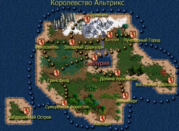
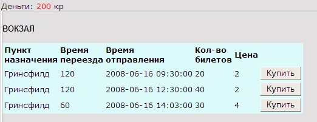
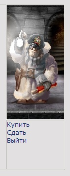
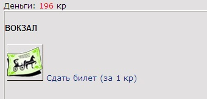

|
Курсы
Регистрация
Методика
Оглавление
Для учащихся

Статьи
Инструменты
Контакты
|
Урок
12.
Перемещение по локациям
12.1.
Таблица городов.
Мир онлайн игры не должен ограничиваться только одним городом. Если
количество играющих в одном городе вырастет им станет явно тесно и возникнет
необходимость создать еще несколько городов.
Более того, создание дополнительных городов придает игре еще
больше интереса. В магазинах других городов могут присутствовать вещи
отсутствующие в столице. Там могут присутствовать специфические строения,
которых нет в других местах. Все это будет стимулировать игроков к поездкам
между городами и затратам на билеты, что может привлечь дополнительные реальные
деньги в игру (переведенные в игровую валюту)
Давайте создадим таблицу городов, пополнив наш
SQL скрипт:
/*Таблица городов*/
CREATE TABLE `Towns` (
`ID` SMALLINT(2) unsigned NOT NULL
auto_increment,
`TownName` char(40) default NULL,
`TownStatus` SMALLINT(2) unsigned NOT NULL
DEFAULT 1, /*1-обычный,2-столица,3-секретный*/
PRIMARY KEY (`ID`)
) TYPE=MyISAM; |
Эта таблица предельно проста и содержит всего три
поля:
ID
- идентификатор города,TownName
- название города и
TownStatus
- статус города. Теперь заполним таблицу хотя бы парой строчек:
INSERT INTO towns (TownName,
TownStatus) VALUES('Силлурия',2);
INSERT INTO towns (TownName, TownStatus) VALUES('Гринсфилд',1); |
По умолчанию игрок регистрируется в столице
игрового мира (Силлурии), которая имеет статус 2. Смотрите табличку
здесь.
12.2.
План перемещений.
Для того, чтоб создать вокзал и расписание карет, нам
понадобится карта перемещений. В учебных целях мы соединим только два города
Силлурию и Гринсфилд, остальные маршруты Вы сможете добавить сами.
Карта, отображающая направления движения карет и пассажирских
судов в нашем исполнении выглядит таким образом:

Здесь Вы
можете найти ее в большем формате.
12.3.
Создание вокзала,
расписание карет.
Основной функцией вокзала служит продажа билетов и организация
посадки игрока в транспортное средство. Для того чтоб создать механизм продажи
билетов, давайте придумаем табличку
tickets.
/* билеты на вокзале */
CREATE TABLE `tickets`(
`TK_ID` BIGINT(20) unsigned NOT NULL auto_increment,
/* ID */
`IL_ID` INT(4) unsigned NOT NULL,/*ID предмета в
справочнике предметов*/
`Town` INT(2) unsigned NOT NULL, /* ID Города, где
расположен вокзал */
`TownTo` INT(2) unsigned NOT NULL, /* ID Города,
куда отправляемся */
`DateStart` TIMESTAMP NOT NULL, /* дата и время
отправления*/
`Price` INT NOT NULL, /* цена билета */
`MovingTime` INT NOT NULL, /* время переезда
(минут) */
`QTY` INT NOT NULL, /* количество предметов */
PRIMARY KEY (`TK_ID`),
KEY (`Town`)
) TYPE=MyISAM; |
Чтоб продать билет, нам нужно иметь его описание в справочник предметов
игры (items_list)
Давайте добавим туда тип предмета - билет.
| INSERT INTO
Items_List (IL_ID,ItemType,ItemNo,ItemName,Item_StateCost,Item_Image,ItemSlotName,
Item_Level,Item_FullLife,Item_Use) VALUES(17,16,1,'Билет
на карету',0,'ticket.gif','Ticket',1,1,1); |
В таблицу предметов
(items) мы также должны добавить два поля:
`Item_TID` INT
DEFAULT 0, /*для билетов - ID строки из tickets с
записью о времени,пункте отправки и т.д.*/
`Item_DateTime` TIMESTAMP, /*для билетов - дата и
время отправления*/ |
Поле Item_TID
будет хранить
идентификатор той строки из таблицы tickets из которой
мы купили билет. Это нам понадобится, чтоб знать параметры билета и пункт
назначения. Поле
Item_DateTime -
будет содержать дату и время отправления.
Здание вокзала на Центральной площади у нас выглядит так:
В нашем файле
map.phtml описание вокзала выполнено следующим
образом:
| <div style="position:absolute;left:590px;top:190px;width:149px;
height:136px; z-index:12;z-index:12"><IMG SRC=Items/Towns/Silluria/bank.gif
CLASS=aFilter onmouseover="imover(this)"
onmouseout="imout(this)" onclick="gotoStation()" ALT="Вокзал"
width="70" height="70"></div> |
При нажатии на
картинку вокзала, срабатывает функция
gotoStation
и мы входим непосредственно в здание вокзала (см.
изменения в файле map.phtml
тут). Давайте создадим файл station.phtml,
который визуализирует наш с Вами вокзал.
При попадании в здание вокзала, игрок должен видеть
доступные для продажи билеты. Пока таблица tickets
пуста, но мы должны заполнить ее информацией о билетах:
INSERT INTO tickets
(IL_ID,QTY,DateStart,Town,Townto,Price,MovingTime) VALUES(17,20,'2008-06-16
09:30',1,2,2,120);
INSERT INTO tickets (IL_ID,QTY,DateStart,Town,Townto,Price,MovingTime)
VALUES(17,40,'2008-06-16 12:30',1,2,2,120);
INSERT INTO tickets (IL_ID,QTY,DateStart,Town,Townto,Price,MovingTime)
VALUES(17,30,'2008-06-16 14:03',1,2,4,60); |
Внимание!
В поле DateStart
обязательно пропишите Вашу сегодняшнюю дату
(время можете оставить то же). Как Вы заметили все билеты продаются только до
Гринсфилда (ID города - 2).
Теперь напишем код для отображения информации о
продаваемых билетах:
$query =
"SELECT Town, Character_Money from users WHERE
Nick_Name='$aNickName'";
$result = mysql_query($query) or
die("Query failed : " .
mysql_error());
$aRow = mysql_fetch_array( $result);
$aTown = $aRow["Town"]; // узнаем город
$aMoney = $aRow["Character_Money"];
$query = "select tk.TK_ID, tk.TownTo, tk.DateStart,
tk.Price, tk.MovingTime, tk.QTY, tw.TownName from tickets tk inner join
towns tw on tk.TownTo = tw.ID where tk.Town = '$aTown'";
$result = mysql_query($query) or die("Query failed : " . mysql_error());
print('<table bgcolor="#DDFAFB"><tr> <td><b>Пункт
назначения</b></td><td><b>Время переезда</b></td><td><b>Время
отправления</b></td><td><b>Кол-во билетов</b></td><td><b>Цена</b></td><td></td>
</tr><tr>');
while ($aRow =
mysql_fetch_array($result)) {
$aTK_ID = $aRow["TK_ID"];
$aTownTo = $aRow["TownTo"];
$aTownToName = $aRow["TownName"];
$aQTY = $aRow["QTY"];
$aMovingTime = $aRow["MovingTime"];
$aPrice = $aRow["Price"];
$aDateStart = $aRow["DateStart"];
print("<td>$aTownToName</td><td>$aMovingTime</td><td>
$aDateStart</td><td>$aQTY</td><td>$aPrice</td>");
if ( $aQTY > 0 ) {
print('<td><input type=button value="Купить"
onClick="BuyTicket('.$aTK_ID .')"></td>');
}
print('</tr>');
}
print('</table>');
}; |
Вначале мы определим
текущий город из таблицы users.
Затем по нему отберем билеты из таблицы tickets.
В окне браузера это выглядит так:

12.4.
Покупка и сдача билетов
Давайте реализуем обработку нажатия кнопки "Купить". При
нажатии на нее срабатывает функция ,
BuyTicket
которой в качестве аргумента
передается идентификатор строки приобретенияя билетов. Сама функция на
JavaScript выглядит так:
function
BuyTicket( tk_id ){
location.href = "station.phtml?tk_id="+tk_id+"&NickName=<?php
echo $aNickName ?>";
} |
В параметре
tk_id
нашему скрипту
station.phtml передается тот же
идентификатор строки покупки билетов. Теперь мы можем
реализовать непосредственно механизм покупки. Прием параметра весьма стандартен:
if (!empty($_GET['tk_id'])){
$aTicketId = $_GET['tk_id'];
} |
Теперь произведем
покупку:
// была инициирована покупка билета
if ($aTicketId <> 0){
$query = "select tk.TK_ID, tk.IL_ID, tk.TownTo,
tk.DateStart, tk.Price, tk.MovingTime, tk.QTY from tickets tk where
tk.tk_id = '$aTicketId'";
$result = mysql_query($query) or
die("Query failed : " .
mysql_error());
$aRow = mysql_fetch_array( $result);
$aTK_ID = $aRow["TK_ID"];
$aIL_ID = $aRow["IL_ID"];
$aTownTo = $aRow["TownTo"];
$aQTY = $aRow["QTY"];
$aMovingTime = $aRow["MovingTime"];
$aPrice = $aRow["Price"];
$aDateStart = $aRow["DateStart"];
$lNoMoney=false;
if ($aQTY-- > -1){
// есть ли вообще билеты?
if ($aMoney >= $aPrice){
// хватит ли денег купить билет?
$aMoney = $aMoney - $aPrice;
// Засунем в рюкзак купленный билет
$query = "INSERT INTO items(IL_ID,Item_Owner,Item_Position,Item_CurrentLife,Item_TID,Item_DateTime)";
$query .= "Values ('$aIL_ID','$aUserID','2','1',$aTK_ID,'$aDateStart')";
$result = mysql_query($query,$link) or
die("Query failed : " .
mysql_error());
// Уменьшим деньги
$query = "UPDATE users SET Character_Money='$aMoney'
WHERE Nick_Name='$aNickName'";
$result = mysql_query($query) or
die("Query failed : " .
mysql_error());
// Уменьшим кол-во билетов на вокзале
$query = "UPDATE tickets SET QTY='$aQTY',DateStart='$aDateStart'
WHERE TK_ID='$aTicketId'";
$result = mysql_query($query) or
die("Query failed : " .
mysql_error());
} else {
$lNoMoney=true;
}
}
} |
Вначале мы
уточняем все параметры покупаемого билета из таблицы
tickets, а потом создаем
его экземпляр в таблице
items в рюкзаке нашего
персонажа. Естественно потом мы должны уменьшить количество билетов этого типа
на вокзале и сумму денег у нашего персонажа, совершившего покупку.
 - будет картинкой билета, отображающейся в нашем рюкзаке.
- будет картинкой билета, отображающейся в нашем рюкзаке.
Теперь у нас есть все права на поездку в город Гринсфилд.
Нередко возникает ситуация, когда нужно продать купленный билет. Мы
могли расхотеть ехать в Гринсфилд или опоздать к началу отъезда транспортного
средства. Для этих целей нужно предусмотреть возможность продажи билета.
В меню вокзала предусмотрим пункт "Сдать", который на
HTML выглядит так:
| <a href="station.phtml?sell=1&NickName=<?php
echo $aNickName; ?>">
Сдать</a></font> |

При нажатии на ссылку "Сдать" скрипту
station.phtml
передается параметр
sell=1,
который переводит вокзал в режим сдачи билета обратно. В
окне мы должны отобразить только приобретенные билеты, лежащие в рюкзаке.
Сделаем это следующим образом:
....
// это уникальный IL_ID для билета (из
справочника предметов)
$TICKET_IL_ID
= 17;
....
if ( $aSell == 1 ){
// покажем купленные билеты для сдачи
$query = "SELECT i.IT_ID, i.IL_ID, il.Item_Image,
il.ItemName, i.Item_DateTime FROM Items i inner join Items_List il on
il.il_id=i.il_id WHERE i.Item_Owner='$aUserID' and i.IL_ID = '$TICKET_IL_ID'";
$result = mysql_query($query) or
die("Query failed : " .
mysql_error());
print('<table>');
while ($aRow =
mysql_fetch_array($result)) {
$aSlotItemID = $aRow["IT_ID"];
$aIL_ID = $aRow["IL_ID"];
$aItemImage = $aRow["Item_Image"];
$aItemName = $aRow["ItemName"];
$aItem_DateTime = $aRow["Item_DateTime"];
echo "<tr><td>" . "<img border=0 src=Items/".$aItemImage." ALT='".$aItemName.'
Время отправления: '.$aItem_DateTime."'>" . " <a href='station.phtml?it_id=$aTicketItemID&NickName=$aNickName'>Сдать
билет (за 1 кр)</a></td></tr>";
}
print('</table>');
} |
Вначале мы отбираем все предметы типа "билет" у текущего игрока и выводим их со
строкой, предлагающей сдать билет за одну кредитку. В окне браузера это выглядит
так:

В качестве домашнего упражнения Вы можете вывести рядом с картинкой
билета полную информацию о нем (время отправления, стоимость, пункт назначения).
При нажатии на ссылку Сдать билет... мы передаем нашему
скрипту содержащемуся в файле station.phtml параметр
it_id,
который является идентификатором предмета (билета) в таблице билетов
items. Теперь мы можем произвести
процесс сдачи следующим кодом:
// была инициирована сдача билета
if ($aItemId <> 0){
$query = "delete from items where it_id='$aItemId'";
$result = mysql_query($query) or
die("Query failed : " .
mysql_error());
// добавим 1 кр за сдачу билета
$query = "UPDATE users SET Character_Money=Character_Money+1
WHERE Nick_Name='$aNickName'";
$result = mysql_query($query) or
die("Query failed : " .
mysql_error());
$aMoney += 1;
$aSell = 1;
} |
Сдаваемый билет мы просто удаляем из таблицы предметов и затем добавляем одну
кредитку нашему игроку в качестве компенсации.
12.5.
Перемещение из
города в город.
Итак, предположим, что у нас есть билет до города Гринсфилд на
11.30 сегодняшнего дня. Сейчас 11.29 и нам пора отправляться. Естественно, чтоб
уехать на карете, наш персонаж должен находиться в здании вокзала. Как же нам
сделать проверку, есть ли у нас билет на нужную карету, отправляющуюся к пункту
назначения в положенное время?
Давайте создадим функцию на JavaScript
работающую по технологии Ajax, которая будет опрашивать
сервер, на предмет возникновения события отправления и присутствия у персонажа
билета на нужный рейс.
Наша функция
CheckReadyToMove,
а также еще парочку с которыми она работает, выглядят так:
var StationDelay =
15;
....
function strt(){ // Начинаем
ChatTimerID = setTimeout('RefreshStation()', 1000);
}
function RefreshStation()
{
if (StationTimerID>=0) { clearTimeout(StationTimerID); }
StationTimerID = setTimeout('RefreshStation()', StationDelay*1000);
CheckReadyToMove();
}
function CheckReadyToMove() {
var rval = Math.round(Math.random()*10000000000000000000);
url = "crtm.php?NickName=<?php echo $aNickName ?>&rv="+rval;
if (window.XMLHttpRequest) {
req = new XMLHttpRequest();
} else if (window.ActiveXObject) {
req = new ActiveXObject("Microsoft.XMLHTTP");
}
req.open("GET", url, false);
req.send(null);
if ( (req.readyState == 4) && (req.status == 200) ) {
it_id = req.responseText;
if (it_id != 0){
location.href = "karet.phtml?NickName=<?php echo $aNickName ?>";
}
}
} |
Функция strt()
вызывается сразу при
загрузке страницы (в теге <body>)
| <body bgcolor="#e2e0e0"
onload="strt()"> |
В
соответствии с задержкой определенной в переменной
StationDelay,
каждые 15 секунд выполняется функция
RefreshStation,
из которой вызывается наша функция проверки возможности отправления на карете -
CheckReadyToMove.
Эта функция использует технологию Ajax - в данном случае
для получения данных сервера, без перезагрузки страницы. Используется встроенный
объект
XMLHttpRequest, если браузер
Опера или ActiveXObject
Microsoft.XMLHTTP,
если Internet Explorer.
Технология Ajax выполняет скрипт
crtm.php,
который и делает необходимые проверки на стороне сервера. При
успешном выполнении условий (req.readyState
== 4) && (req.status == 200)
мы получаем ответ от сервера в свойстве
responseText
объекта
req. Если значение этого свойства
не 0, значит у нашего персонажа есть все предпосылки поехать в данный момент в
Гринсфилд.
Проверки в файле
crtm.php
выглядят так:
$query =
"SELECT USER_ID, Town FROM users where Nick_Name='$aNickName'";
$result = mysql_query($query) or
die("Query failed : " .
mysql_error());
$aRow = mysql_fetch_array( $result);
$aUSER_ID = $aRow["USER_ID"];
$aTown = $aRow["Town"];
$curdate=date("Ymd H:i");
// поищем в билетах у игрока в рюкзаке и узнаем
время отправления
$query = "SELECT i.Item_DateTime, i.Item_TID,
t.Town FROM items i inner join tickets t on i.Item_TID = t.TK_ID where
i.Item_Owner='$aUSER_ID' and date_format(i.Item_DateTime,'%Y%m%d
%H:%i') = '$curdate'";
$result = mysql_query($query) or
die("Query failed : " .
mysql_error());
while ($aRow =
mysql_fetch_array($result)) {
$aItemTID = $aRow["Item_TID"];
$retStatus = $aItemTID;
}
echo $retStatus; |
Сперва мы формируем текущую дату в виде строки формата "годмесяцчисло
часы:минуты" и сравниваем ее с такой же строкой (date_format(i.Item_DateTime,'%Y%m%d
%H:%i')) из поля
Item_DateTime,
таблицы items для билета, купленного нашим
персонажем.
В случае совпадения - выводим ненулевое значение (в данном
случае - идентификатор билета). Этого достаточно чтоб это значение вернулось в
вызывающей функции
CheckReadyToMove
в нашем скрипте вокзала.
И последнее, мы должны отобразить картинку, процесса
езды в карете, после отправления.
Правда перед этим давайте добавим объект кареты в таблицу Buildings:
| INSERT INTO
Buildings (ID, BuildingName, BuildingType, Town,PHP_File) VALUES(11,'Карета',11,1,'karet.phtml'); |
Cоздадим
простой файлик karet.phtml, основной PHP
код которого выглядит так:
$OBJECT_TYPE =
11; // тип данного
объекта (кареты) 11 для всех городов
......
$query = "SELECT Town, Character_Money, USER_ID
from users WHERE Nick_Name='$aNickName'";
$result = mysql_query($query) or
die("Query failed : " .
mysql_error());
$aRow = mysql_fetch_array( $result);
$aUserID = $aRow["USER_ID"]; // ID нашего игрока
$aTown = $aRow["Town"];
// узнаем город
$aMoney = $aRow["Character_Money"];
$query = "SELECT ID FROM Buildings where Town=$aTown
and BuildingType=$OBJECT_TYPE";
$result = mysql_query($query) or
die("Query failed : " .
mysql_error());
$aRow = mysql_fetch_array( $result);
$aObjectID = $aRow["ID"];
// меняем комнату у игрока
$query = "UPDATE users SET Building=$aObjectID
WHERE Nick_Name='$aNickName'";
$result = mysql_query($query) or
die("Query failed : " .
mysql_error()); |
И
отобразим анимационную картинку движущейся кареты:
| <img src="items/horseanim.gif"> |
Которая
выглядит так:
В качестве домашнего упражнения, Вы можете определить конец движения
транспортного средства и прибытие в другой город.
В следующем уроке мы займемся торговлей, создадим объект торговых рядов на
Центральной площади и научимся продавать, покупать и передавать предметы
непосредственно от персонажа к персонажу.
|
|
{kind=link}